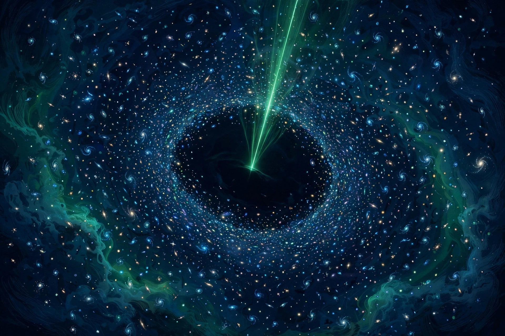

October 19, 2026
A Signal From Empty Space — Webb's Unexplained Detection in the Ultra Deep Field

Illustration: The Discovery Wire (generated artwork for this story)
In the southern constellation of Fornax lies a speck of sky your eyes may have brushed past a hundred times without a thought. The Hubble Space Telescope stared at it for more than 270 hours to build the famous Ultra Deep Field — and inside that tiny frame sit nearly 10,000 galaxies, billions of light-years deep. It may be the most-cataloged patch of sky in existence.
A team led by astrophysicist Mason Huberty of the University of Minnesota decided to look at that patch in a way nobody had tried before. Instead of using Webb's Near-Infrared Spectrograph (NIRSpec) to study objects already known from images, they used it as a discovery tool — opening nearly all of the instrument's tiny microshutters (closing only those on known foreground objects whose light would contaminate the data), then splitting the collected light into spectra and searching for emission lines.
The technique is called MOCSS — Multiobject Coronagraphy for Slitless Spectroscopy. They ran it twice, 88 days apart in August and November 2023, at different observation angles to rule out glitches. The Ultra Deep Field was the ideal testing ground, with decades of prior observations to check against.
It worked. Six detections matched known distant galaxies. The seventh didn't match anything.
The seventh was a single, bright emission line at about 1.6 micrometers in the near-infrared — detected in all four combined sets of exposures, across both orientations, with consistent measurements. In every prior image of that spot — Hubble and Webb alike — there is absolutely nothing there.
It can't easily be a glitch: it repeated 88 days later with the same strength. And here's the real kicker — the line was bright enough that it should have shown up in Webb's JADES survey of the same area in October 2022. Had it been present then, the telescope couldn't have missed it. Which raises the possibility that maybe it wasn't present then: something too dim to see that briefly flared, or a source that suddenly brightened.
The catch is that a single emission line is very hard to identify. As the universe expands, it stretches light toward redder wavelengths — so an infrared photon could be energetic light from very far away, or weaker light from much closer. Without a second line to anchor it, there's no redshift, no distance, no identification.
The researchers considered four suspects, and none fits cleanly: an early-universe galaxy (but the light would struggle to cross the neutral hydrogen of that era, and it should have appeared in JADES); a more recent galaxy (same JADES problem, plus it should show other lines); a supernova (should have produced another line that wasn't detected); or a black hole tearing apart a star, which can produce a strong line with little other visible light — but there's not enough evidence to establish that.
"This object is highly unusual and probes extreme physical conditions," the team writes in The Astrophysical Journal. "Follow-up observations are essential to confirm the redshift and determine the physical origin of the emission."
That's where it stands: a real, repeatable signal from a place where no source is visible, bright enough that it should have been seen before — and wasn't. The universe keeps a few things to itself.
The book we'd hand you: The 4 Percent Universe by Richard Panek — the story of how astronomers discovered that only 4 percent of the universe is the matter we can see, and the race to find the other 96 percent: dark matter and dark energy. If a signal from an invisible source hooked you, this is the bigger mystery it belongs to. Link in the first comment.
Source: ScienceAlert — read the original report
← Back to latest stories